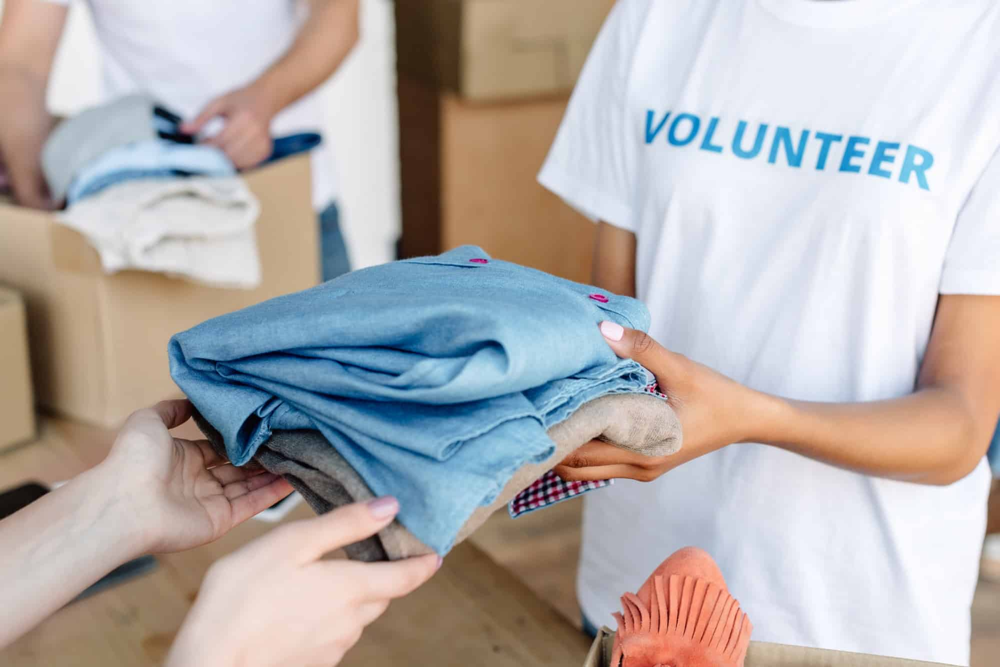

Von Hamburg in die Welt
Hilfe, die Menschen stärkt.
Wir begleiten Familien, Kinder und Gemeinschaften mit konkreter Unterstützung, Bildung, sauberem Wasser und psychosozialer Beratung.
Über Butterfly Effects
Hilfe beginnt mit Zuhören – und wird durch Verantwortung wirksam.
Wir verbinden Menschen, die helfen möchten, mit Familien und Gemeinschaften, die Unterstützung benötigen.
Bevor Hilfe geleistet wird, prüfen wir die tatsächliche Bedürftigkeit und die Dringlichkeit. Maßnahmen werden so gewählt, dass sie nicht nur kurzfristig entlasten, sondern langfristig Sicherheit, Bildung und Selbstständigkeit fördern.
Butterfly Effects kennenlernen →Was unsere Arbeit leitet
Unsere Arbeit
Konkrete Hilfe. Langfristige Wirkung.
Butterfly Effects verbindet unmittelbare Unterstützung mit Projekten, die Familien und Gemeinschaften dauerhaft stärken.

Sauberes Wasser schafft Zukunft
Handpumpen und größere Brunnenanlagen verbessern Gesundheit, Bildung und Alltag.
Projekt ansehen →
Verlässlich begleiten
Patenschaften geben Kindern Fürsorge, Bildung und eine langfristige Perspektive.
Projekt ansehen →
Stabilität und Selbstständigkeit
Von akuter Versorgung bis zu Werkzeugen für ein eigenes Einkommen.
Projekt ansehen →Unsere Projektorte
Dort, wo Hilfe
konkret wird.
Die Karte zeigt ausschließlich Orte, die im aktuellen Projekt- und Medienarchiv nachvollziehbar belegt sind.
- Tansania
- Niger
- Bangladesch
- Srebrenica
- Gaziantep

Gemeinsam handeln
Nähe entsteht durch Menschen.
Spenderinnen und Spender, Ehrenamtliche und Fachkräfte bringen Zeit, Wissen und Verantwortung zusammen.
Mitmachen